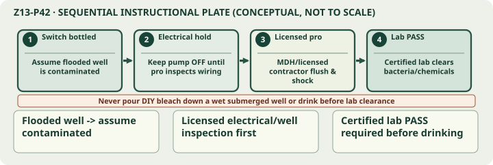

Z13-P42 · Home survival and utilities · New manuscript
Reject flood-submerged private well water until licensed inspection and testing
Prevent severe waterborne disease, chemical exposure, and electrocution after floodwater reaches or surrounds a private drinking well.
When it applies · Any private well surrounded by, submerged under, or near flooded basements, creeks, or agricultural floodwater.
Equipment · Bottled or verified safe alternative drinking water, licensed well contractor contact, and certified testing laboratory.

Actions
- Assume ANY private well inundated or surrounded by floodwater is contaminated with sewage, bacteria, silt, and potentially agricultural/fuel chemicals—do NOT drink, cook with, or brush teeth with it, and do NOT turn the electrical pump back on until an electrician/well pro inspects submerged wiring.[W18, U05, U06]
- Hire a state-licensed well contractor (in Minnesota, an MDH-licensed well contractor) to inspect the well casing, pump electrical system, and sediment fouling, flush the system, and perform proper shock chlorination if mechanically sound.[W18, U06]
- Do NOT resume drinking the well water until certified laboratory testing confirms absence of coliform/E. coli bacteria AND any locally relevant chemical contaminants after all disinfectant chlorine has cleared.[W18, U05, U06]
Failure recognition · Trying to pour household bleach down a submerged muddy well yourself while the electrical conduit is still wet, then drinking it without a lab test.[W18, U06]
Verify · Confirm bottled/verified safe water is in use, well pump stays off until electrical check, and licensed contractor + lab clearance precede reuse.[W18, U06]
Stop or change course · Flooded wellheads, fuel sheens nearby, or failed post-flood coliform lab tests prohibit drinking well water until full licensed remediation passes lab checks.[W18, U06]
Evidence and editorial notes
- U05 · US EPA · Private Drinking Water Wells (current web edition)
- Section: Private Drinking Water Wells > Maintenance, Floods, and Testing · Conditions: Households relying on private domestic groundwater wells
Support: Private wells are not regulated by municipal utilities; test water annually (and after any flood, power loss with pressure drop, or plumbing repair) through a certified laboratory and keep wellheads sealed above grade away from runoff and chemicals.
Limitations: Visual clarity or normal taste never proves a private well is free of bacteria, nitrates, or arsenic. · Conflicting evidence: None; aligns with CDC-WELL (W18) and MDH-WELL-HOME.
Editorial note: Core private-well governance and testing cadence in Z13. · Specialist reviewer: Hydrogeology, licensed well contractor, and public health
Primary source · checked 2026-11-24 - U06 · Minnesota Dept. of Health · Wells and Borings Safety (current web edition)
- Section: Wells and Borings > Minnesota Private Well Standards and Disinfection · Conditions: Minnesota and Upper Midwest private residential wells
Support: Use a licensed Minnesota well contractor for wellhead repair, electrical pump work, or shock disinfection after flooding or backflow; maintain sanitary well caps and isolate well casings from surface snowmelt and agricultural runoff.
Limitations: DIY well-cap removal or improper chlorine mixing risks aquifer contamination and electrical shock. · Conflicting evidence: None; regionalizes EPA-WELL for Minnesota conditions.
Editorial note: Anchors Upper Midwest private-well resilience and licensed-trade handoff. · Specialist reviewer: Minnesota environmental health and licensed well trades
Primary source · checked 2026-11-24 - W18 · CDC · What to Do With Your Private Well After a Flood (current web edition)
- Section: How to Disinfect Wells After an Emergency > Safety precautions and before returning to use · Conditions: Private drinking water wells submerged or impacted by floodwater
Support: Do not drink flood-impacted well water; rely on bottled or verified safe water, watch for fuel/chemical spills, and use qualified well contractors for inspection, electrical safety, and disinfection.
Limitations: Well shock-chlorination is unsafe to improvise around damaged electrical equipment or chemical releases. · Conflicting evidence: None; aligns with EPA private-well guidance.
Editorial note: Prevents DIY well repair or consumption before testing confirms safety. · Specialist reviewer: Drinking-water utility and environmental health
Primary source · checked 2026-11-24
Source lineage · CDC Private Wells After Flood and MN Dept. of Health; new manuscript · Classification · New manuscript.